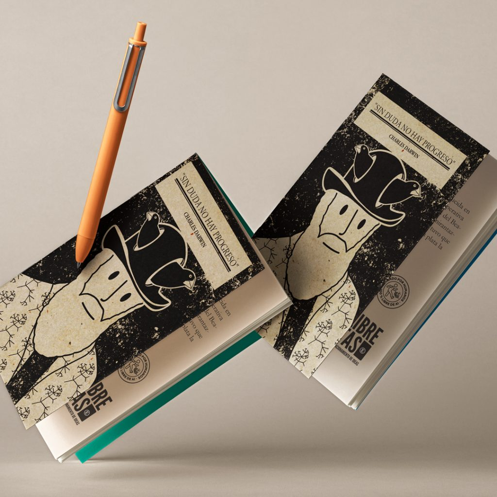
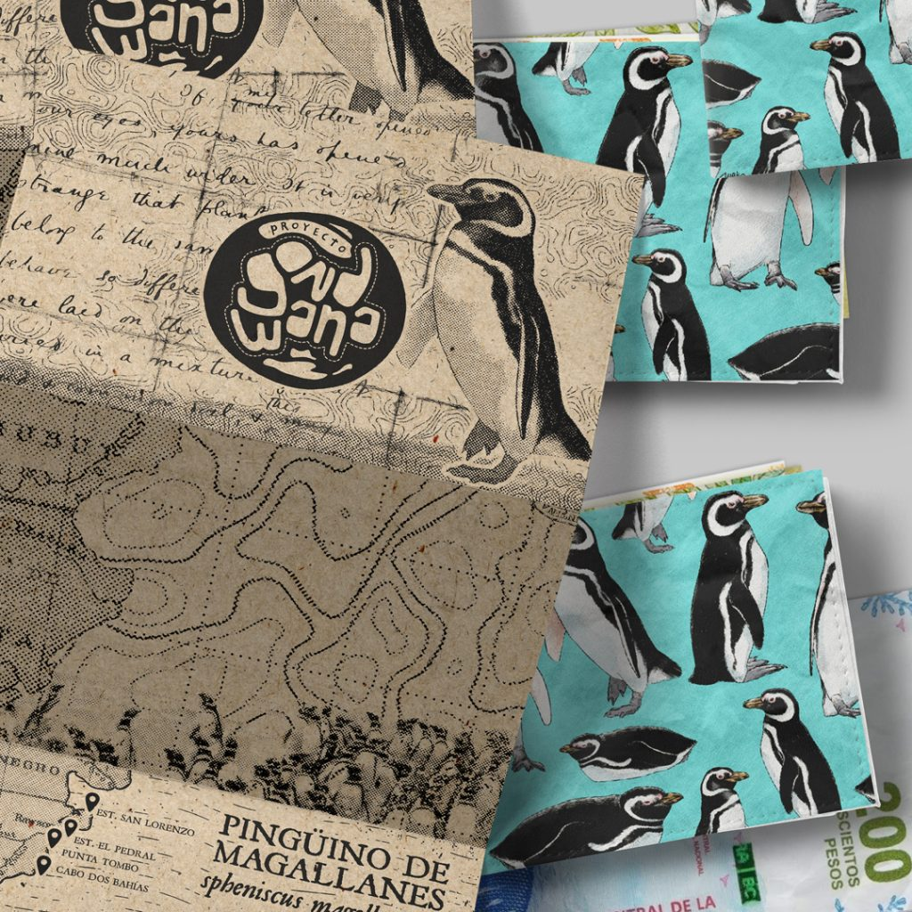
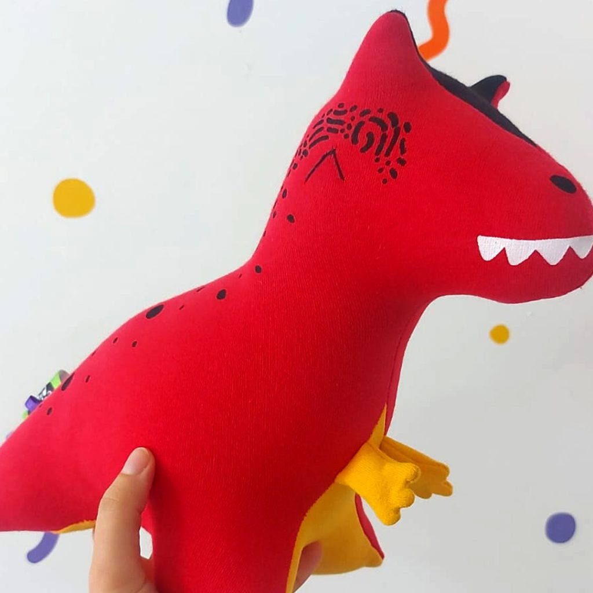
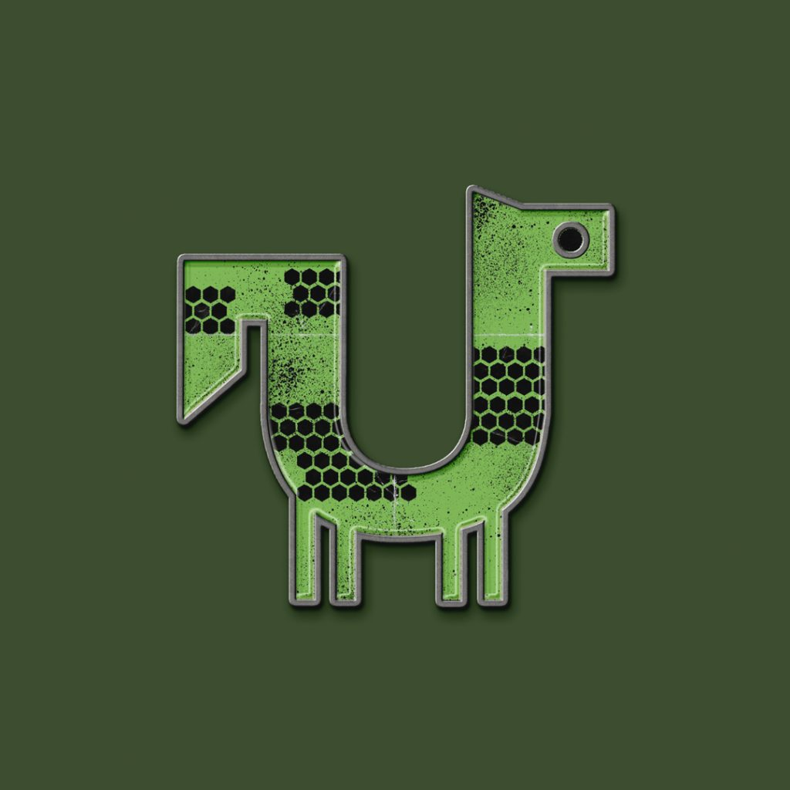
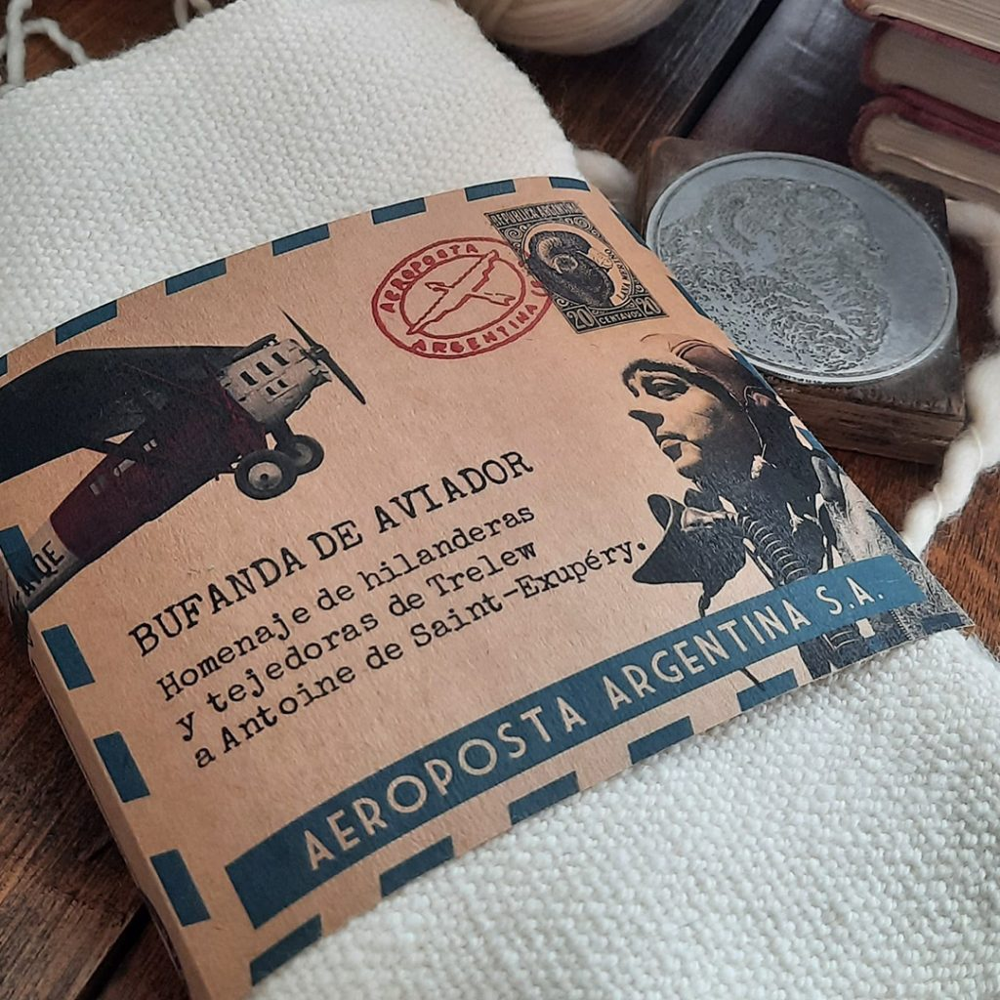

Catálogo de Impacto [v1.0]
Objetos diseñados para viajar, aprender y durar. Cada pieza contiene una parte de la historia patagónica.

Una guía visual y científica por el corredor turístico más fascinante de la región. Mapas, fósiles e historia.

Inspiradas en los cuadernos de campo de los grandes naturalistas. Papel de alta calidad y tapas resistentes.

Texturizada y resistente. Un diseño minimalista que celebra la fauna costera de Chubut.

Llevá la prehistoria a casa de la forma más suave. Diseños originales basados en fauna autóctona extinta.

El toque justo para tu mochila. Ilustraciones de alta precisión hechas pin.

Bufandas y ropa tejida con lana local, incorporando patrones geográficos y biológicos.